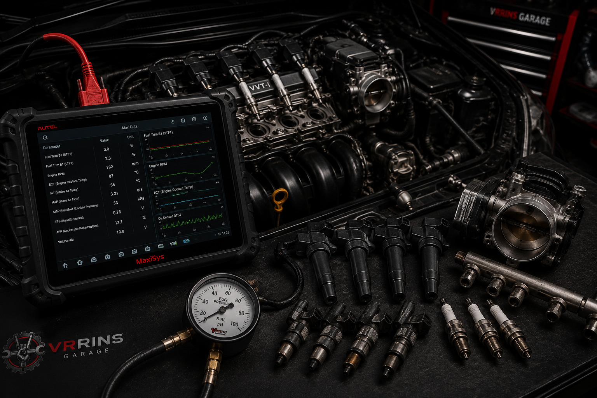
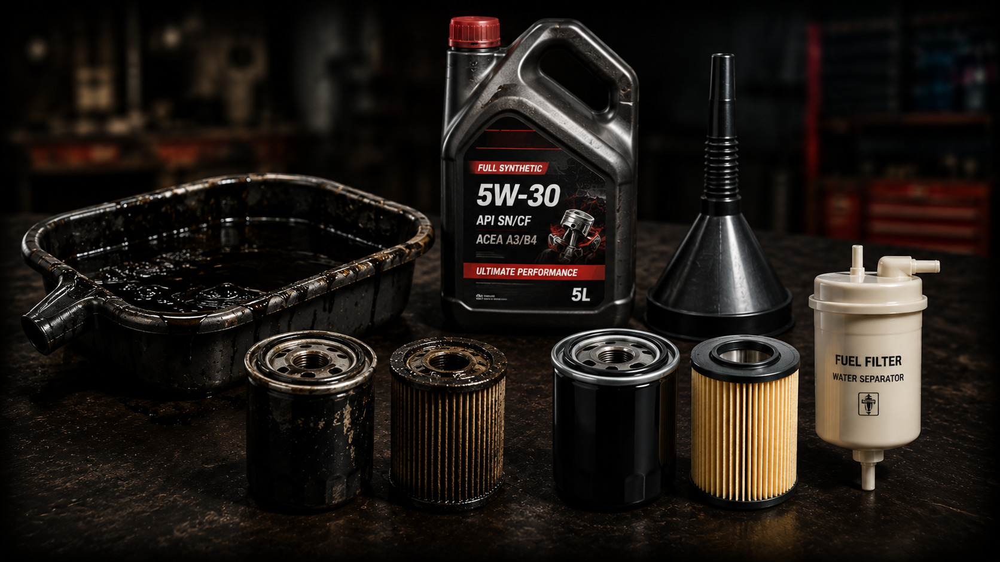
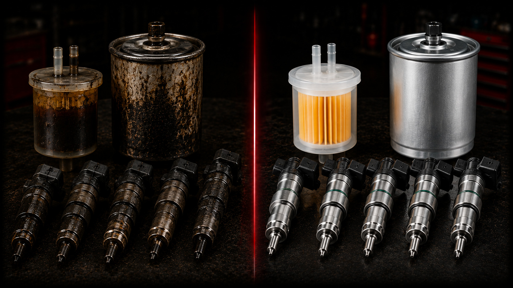
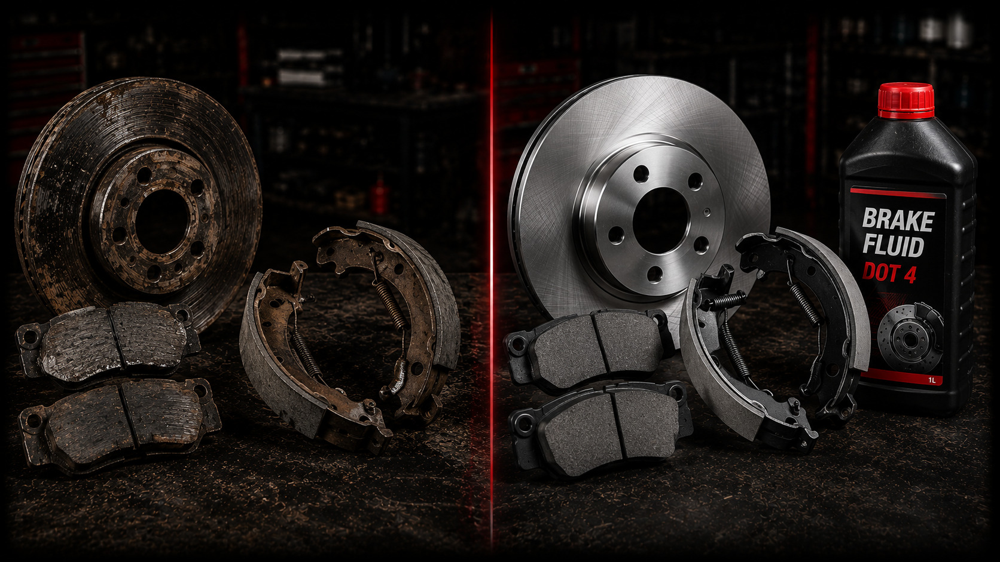
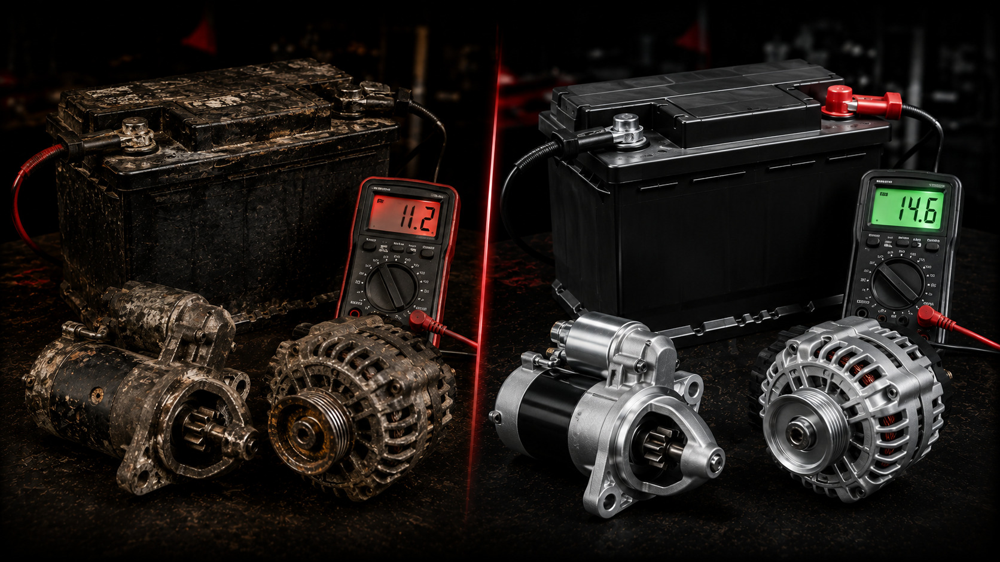

Servis mobil rumahan & panggilan khusus untuk wilayah Palembang.
Pengerjaan rapi dan teliti.
Diagnosa sesuai kondisi kendaraan.
Rumah, kantor, atau lokasi yang disepakati.
Estimasi biaya diinformasikan sebelum pengerjaan.
Jadwalkan servis dengan mudah.
Melayani wilayah Palembang dan sekitarnya.

Scan & Cek Fisik Kendaraan

Servis Sistem Rem

Layanan Tune Up Komprehensif untuk Mesin Bensin & Diesel.

Ganti Oli (Mesin / Transmisi / Gardan)

Perawatan & penggantian komponen mesin (Engine Flush, Busi, Timing Belt, dll).

Ganti oli mesin, transmisi, gardan, dan mengatasi kebocoran oli.

Pembersihan sistem, ganti fuel pump, filter, injector, & servis karburator.

Ganti shock absorber, ball joint, arm, link stabilizer, dan bearing roda.

Servis steering rack, power steering, ganti tie rod, rack end, dll.

Servis rem, ganti kampas rem, cakram, kaliper, dan master rem.

Kuras radiator, ganti water pump, thermostat, selang, & motor fan.

Ganti kopling, drive shaft, servis transmisi manual dan otomatis.

Pemeriksaan starter, charging, ganti aki, alternator, dinamo, & coil.

Konsultasikan keluhan mobil Anda lewat Chat WA.

Kirim share-loc rumah atau kantor Anda secara presisi.

Mekanik datang langsung melakukan scan sistem kelistrikan.

Perbaikan dikerjakan transparan di garasi Anda.

Kendaraan diuji coba, normal, baru lakukan pembayaran.

Anda cukup menekan tombol 'Booking WA' atau menghubungi nomor WhatsApp kami, tentukan lokasi rumah/kantor Anda di Palembang, dan atur jadwal penanganan mekanik.
Estimasi biaya transportasi disesuaikan berdasarkan zona wilayah operasional (Zona 1, Zona 2, atau Zona 3) di Palembang.
Kami menerima pembayaran tunai maupun transfer bank setelah pengerjaan dan uji coba kendaraan selesai dilakukan.
Informasi mengenai perbaikan dan pemeriksaan sistem kendaraan.
BOOKING VIA WHATSAPP
Layanan pemeriksaan menyeluruh untuk mengetahui kondisi kendaraan menggunakan scanner diagnostik dan pengecekan visual.
• Lampu Check Engine Menyala / Brebet
• Tenaga Berkurang / Boros BBM
• Bunyi Kaki-kaki / Setir Tidak Stabil & Bergetar
• Rem Kurang Pakem
• General Check Up Berkala / Sebelum & Sesudah Perjalanan Jauh
• Inspeksi Mobil Bekas Sebelum Dibeli
*Paket ini murni merupakan jasa inspeksi, diagnosa komputer, dan pelaporan kondisi menyeluruh.
Servis sistem pengereman secara profesional untuk memastikan keamanan dan ketahanan pengereman mobil Anda.
Mobil yang remnya berbunyi, bergetar saat diinjak, atau sudah lama tidak diservis.
Mengembalikan performa pengereman agar pakem, responsif, dan aman dikendarai.
Penggantian profesional untuk mesin, transmisi manual/otomatis, dan gardan dengan pemeriksaan menyeluruh.